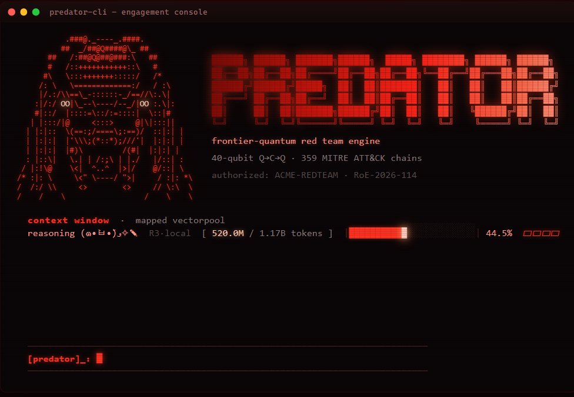

Investigate with context.
AI reasoning and Observatory history help guide the next useful question.
PREDATOROBSERVATORYAI investigation. Verified evidence. Adaptive compilation. Predator brings them together for authorized security work.

01 / THE SYSTEM
Explore a failure. Challenge the explanation. Keep the result another reviewer can inspect.
AI reasoning and Observatory history help guide the next useful question.
PREDATOROBSERVATORYAQRC reconstructs computational structure. Nano evaluates deterministic eligibility for the next route.
AQRCNANOClassical challenge and native verification keep a promising score separate from a verified repair.
ATLASCRUCIBLEThis describes the broader research stack. Available CLI controls depend on the authorized backend; policy eligibility alone does not authorize hardware execution.
02 / IBM QUANTUM RESEARCH
The Fez pilot compared the ordinary compiler with AQRC’s joint5 compilation on the same fixed task. Both tested outputs moved closer to their ideal distributions.
Relative reductions are calculated from the recorded TV distances. Both poles belong to the same fixture and acquisition.
The objectives, angles, shot counts, and initial physical layout were held fixed. The compiler reduced native two-qubit gates from 144 to 103 on each pole.
The improvement is in agreement with the ideal output. Expected energy increased, so this result does not establish better minimization.
Compiler-quality pilot.
No independent confirmation, deep-chain lift, or quantum computational advantage is claimed.
Sampling-only 95% intervals for ordinary-minus-joint5 TV improvement: vulnerable pole [0.036615, 0.117400]; fixed pole [0.052002, 0.135952]. These use 2,000 independent multinomial bootstrap replicates per arm, seed 20260906.
The intervals exclude calibration drift and independent confirmation. This is one six-variable fixture in one hardware job; the poles are not independent source seeds. The public JSON is an author-reported extract with source fingerprints, not a full raw reproducibility bundle.
03 / THE NEXT RESEARCH QUESTION
Public research and product overview.
The implementation remains private.